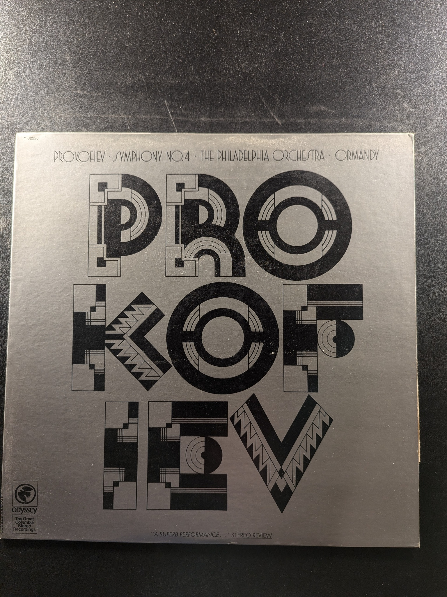

Symphony No. 0 in D Minor
Concertgebouw Orchestra, Amsterdam, Bernard Haitink
Philips
Suite in A Major for Recorder & Orchestra / Sonata in B Minor for Oboe & Harpsichord / Quartet in G Major
The Telemann Society Orchestra & Instrumental Ensemble
Amphion CL2147
Concerti a due cori
Händel
Philips
Piano Concertos Nos. 1 and 2
Prokofieff
RCA Victor Red Seal LSC-2897
The Four Seasons
Vivaldi / Itzhak Perlman
Angel S-37063
Mša Glagolskaja (Missa Glagolitica)
Leoś Janáček
Deutsche Grammophon 138 954
Sibelius: 3 Sonatines, Op. 67; 'Kyllikki', Op. 41
Glenn Gould
Columbia M 34555
Symphony No. 4
Prokofiev, The Philadelphia Orchestra, Ormandy
Odyssey Y 32826
William Tell and other Famous Overtures
Rossini
Yorkshire Records STPL 511.180
Overtures
Arturo Toscanini
Seraphim 60109
Six Favorite Overtures
Gioacchino Rossini
The Musical Heritage Society Inc. MHS 3176
Symphony No. 7 in A Major, Opus 92 / King Stephan Overture
Ludwig van Beethoven
Philips PHM 500-012
Music for Guitar from the Spanish Renaissance and Rococo
Brigitte Zaczek
The Musical Heritage Society Inc. MHS 991
Joaquin Rodrigo
Pepe Romero
Philips 9500 915
Werke für Laute II - Works for Lute II
Johann Sebastian Bach
Deutsche Grammophon 2530 462
In the Classic Style
Christopher Parkening
Angel S-36060
Plays Bach
Parkening
Angel S-36047
Parkening and the Guitar
Parkening
Angel S-36056
Sacred Music for the Guitar
Christopher Parkening
EMI Angel DS-37385

In the Spanish Style
Christopher Parkening
Angel S-36050
Romanza
Christopher Parkening
Angel S-36054
Symphony No. 4
Leopold Stokowski/American Symphony Orchestra
Columbia ML 6171

Vieuxtemps Violin Concertos No. 4 in D minor, No. 5 in A minor
Itzhak Perlman, Orchestre de Paris, Daniel Barenboim
Angel S-37446
Canon in D Major / Trumpet Concerto in D Major
Johann Pachelbel / Johann Friedrich Fasch
Musical Heritage Society MHS 1060
Tchaikovsky Symphony No. 3 'Polish' / Suite No. 3 Theme & Variations
Sir Adrian Boult, The Paris Conservatoire Orchestra, The London Philharmonic Orchestra
London Stereo Treasury Series STS 5237
{kind=link}
{kind=link}
{kind=link}
{kind=link}
{kind=link}
{kind=link}
{kind=link}
{kind=link}
{kind=link}
{kind=link}
{kind=link}
{kind=link}
{kind=link}
{kind=link}
{kind=link}
{kind=link}
{kind=link}
{kind=link}
{kind=link}
{kind=link}
{kind=link}
{kind=link}